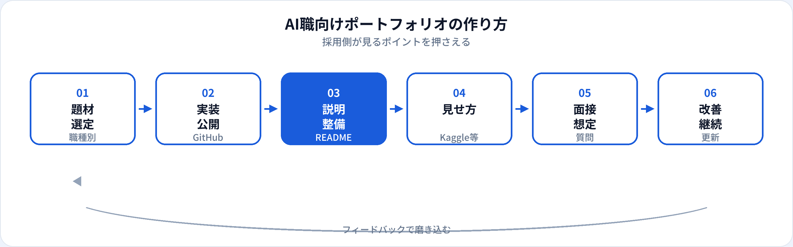

AI職の転職・未経験採用では、資格や学習履歴に加えて再現可能な成果物が重視されます。本記事では、採用側がポートフォリオで見るポイント、職種別の題材選び、GitHubの見せ方、Kaggleの活かし方、よくある失敗を2026年6月時点で整理します。学習ロードマップのフェーズ6とあわせて読むと、応募までの流れがつかみやすくなります。
ポートフォリオで伝えるべきこと
ポートフォリオの目的は「すごい技術を使った」ことの誇示ではなく、業務に近い課題をどう分解し、どう実装し、どう評価したかを第三者に伝えることです。未経験採用では、実務年数の代わりに「この人なら入社後も同様の思考で進められそうか」を判断する材料になります。
量より質です。完成度の高い1〜3作品があれば十分なことが多く、10個の未完成リポジトリより、READMEと再現手順が整った1本の方が評価されやすいです。
採用側が見るポイント
書類選考や技術面接の前段で、採用担当・エンジニアはおおむね次の観点で見ます。
| 観点 | 見ていること | 対策のヒント |
|---|---|---|
| 再現性 | cloneして動くか、手順が明記されているか | requirements.txt、環境変数の例、サンプルデータを用意 |
| 課題設定 | なぜその題材か、ビジネス文脈があるか | 「誰のどんな困りごとを解くか」をREADME冒頭に書く |
| 評価・限界 | 指標の選び方、失敗パターンの理解 | 精度だけでなく、データの偏り・コスト・リスクも記載 |
| コード品質 | 読みやすさ、適切な分割、コミット履歴 | 1ファイルに全部詰め込まない。意味のあるコミットメッセージ |
| 職種との一致 | 応募職種の実務に近いスキルが出ているか | 汎用チュートリアルの写経だけで終わらせない |
職種別の作り方
狙う職種に合わせて、題材と見せ方を変えるのが効率的です。
| 職種 | おすすめ題材 | 盛り込むとよい要素 | 詳細ガイド |
|---|---|---|---|
| データアナリスト | 公開データの売上・利用分析、KPIダッシュボード | 問い→SQL→可視化→示唆の一連、BIスクショ | 記事へ |
| AIエンジニア | 分類・回帰の学習パイプライン、推論API | 評価指標、学習/検証分割、Docker（任意） | 記事へ |
| データサイエンティスト | 仮説検証付きの分析、小規模予測モデル | EDA、特徴量の根拠、ビジネスへの翻訳 | 記事へ |
| 生成AIエンジニア | RAGチャット、社内文書検索PoC | プロンプト設計、評価、ガードレール | 記事へ |
| プロンプトエンジニア | 業務テンプレート集、A/B比較ログ | 改善前後、評価観点、リスク対策 | 記事へ |
| MLOpsエンジニア | CI/CD付き学習パイプライン、モデル監視のデモ | 再学習トリガー、ログ、インフラ構成図 | 記事へ |
題材に迷ったら、未経験者が最初に狙うべきAI職種5つで職種を1つに絞ってから着手してください。
制作の流れ

-
題材を1つ決める（3〜7日）
応募したい職種のJD（求人票）から逆算し、キーワードに近い題材を選ぶ。
-
最小構成で動かす（2〜4週間）
完璧な精度より、 end-to-end で一通り回る状態を優先する。
-
READMEを書く（2〜3日）
背景・手法・結果・限界・再現手順を整理。図や表があると読みやすい。
-
フィードバックを得る（1週間）
学習コミュニティや知人に見てもらい、説明のわかりにくい箇所を直す。
GitHubの見せ方
リポジトリ構成
README.md、requirements.txtまたはpyproject.toml、src/、notebooks/（分析系）、data/README.md（データの出典と取得方法）を分ける。
READMEの必須項目
概要、課題、使用技術、セットアップ手順、実行方法、結果（スクショ・表）、今後の改善点、ライセンス・データ出典。
避けたい状態
巨大な単一ノートブックのみ、APIキーの直書き、データの無断アップロード、コミットメッセージがすべて「update」。
READMEの骨子（コピー用テンプレート）
1. 背景と目的 → 2. データと前提 → 3. 手法の選定理由 → 4. 結果と評価 → 5. 限界とリスク → 6. 再現手順 → 7. 参考リンク
Kaggle・その他プラットフォーム
Kaggleは、データサイエンティスト・MLエンジニア志望で特に有効です。コンペの順位そのものより、ノートブックの考察と再現性が評価されやすいです。メダルがなくても、公開ノートブックに仮説・EDA・改善過程が書かれていればアピールになります。
-
GitHubとの役割分担
Kaggleで探索・実験、GitHubで整理されたパイプラインとREADME、という二段構えがおすすめ。
-
生成AI系の見せ方
プロンプト改善ログはNotionやGitHubの
docs/にまとめ、 ChatGPT等の利用は入力データのマスキングに注意。
ChatGPT等の利用は入力データのマスキングに注意。 -
社内に近い題材
現職の業務をそのまま公開できない場合は、同業界の公開データや匿名化した架空データで「業務に近い問い」を再現する。
履歴書・面接での伝え方
URLを載せるだけでは不十分なことが多いです。何を解決し、何を学んだかを短文で添えます。
職務経歴書の書き方
「GitHub：〇〇（顧客離反予測。精度〇%、特徴量設計とクラス不均衡への対処を実装）」のように、成果と工夫を一文で。
面接で話す構成
課題設定（1分）→ 手法とトレードオフ（2分）→ 結果と限界（1分）→ 入社後にどう活かすか（1分）。
資格との組み合わせ
G検定・生成AIパスポートは「理論の理解」、ポートフォリオは「実践」として役割分担を説明すると説得力が増す。
よくある失敗と対策
| よくある失敗 | 対策 |
|---|---|
| チュートリアルの写経だけで終わる | データセット・評価指標・問いを自分で変える |
| 精度だけを強調し、限界に触れない | 失敗例・バイアス・運用コストをREADMEに書く |
| 動かないリポジトリを複数並べる | 代表作1つを完璧にし、他はアーカイブまたは統合 |
| 職種と無関係な題材ばかり | 応募JDのキーワードに合わせて題材を選び直す |
| 完璧を待ちすぎて応募が遅れる | 80%の完成度で応募し、フィードバックで改善する |
よくある質問
AI職のポートフォリオは何個必要？
質の高い1〜3個が目安です。未経験なら職種に直結した完成度の高い1作品があれば十分なことが多いです。
Kaggleのメダルは必須？
必須ではありません。ノートブックと考察を整理できればアピール材料になります。メダルはあれば加点要素です。
生成AIだけのポートフォリオで転職できる？
プロンプトエンジニアやAI PMなら可能な場合があります。実装職ではデータ処理や評価を含む作品が別途求められることが多いです。
READMEに何を書けばよい？
背景・課題、データ、手法、結果、限界、再現手順が基本です。なぜその設計にしたかを説明できることが重要です。
ポートフォリオはいつから作るべき？
学習開始2〜3か月目から着手し、応募の1〜2か月前には代表作を1つ完成させるのが目安です。学習ロードマップのフェーズ6も参照してください。